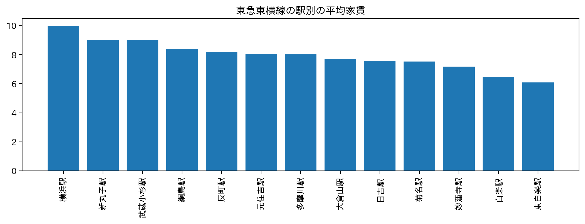

神奈川大学にお勧めする物件
私は今大学に通ううえで東横線を使っているので東横線で一人暮らしをするのにおすすめの駅を紹介します。
★下書き★

班のメンバーで写真検索のコードを作る人、周辺のおすすめスポットを提案してくれるコードを作る人、周辺の宿泊施設を提案してくれるコードを作る人、
最善の交通機関を提案してくれるコードを作る人の４つに分かれて製作しました。
私は周辺のおすすめスポットを提案してくれるコードを担当しました。
感想
杉野先輩の過去のPythonコードを参考にしてインスタグラムのサイトに飛べるように改良させていただきました。
先輩のコードはTwitterと連携しており＃とアカウントが必要でしたが自分が作りたいプログラムにアカウントは必要なかったのでアカウントを必要としないコードに書き換えました。最初は実行した後毎回実行の記録を削除しなければ連続でインスタグラムのサイトに飛べなかったので実行の記録を削除せずとも繰り返し検索してサイトに飛べるようにしました。
途中、完成させるのは難しいと思ったが班のメンバーに助けられながらもここまで形にできたことがとても嬉しいです。
自分が日常で使っている様々なツールはどんなコードになっているのかみたいです。